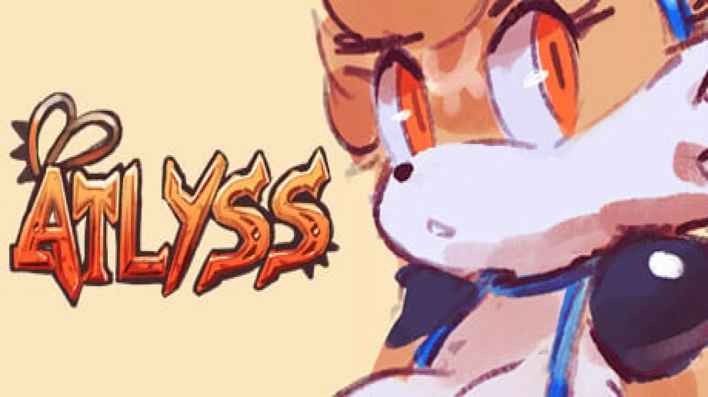

RP6 field report
Atlyss
🛠 Needs Tinkering
This one feels close. I can see the finish line, but we're not quite there yet.
Reviewed July 2026

Test setup
RP6 compatibility
- Device
- Retroid Pocket 6
- OS
- Armada
- Store
- Steam
- Compatibility layer
- Proton
The play session
Experience
Atlyss is definitely playable, but I couldn’t quite settle into the experience.
Performance was inconsistent enough that occasional stuttering kept pulling me out of the game. It wasn’t severe enough to make me stop playing altogether, but it was frequent enough that I never fully relaxed.
I have a feeling there’s still room for improvement through future Proton updates or Armada optimisations, so this isn’t a game I’m giving up on. Right now, though, it still feels like a work in progress.